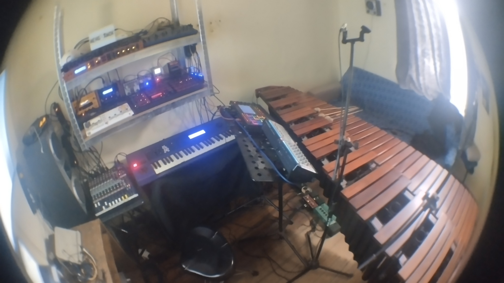

Marimba Solista
Interpretación de obras clásicas y contemporáneas en formato solista. Bach, Smadbeck, Abe, Rosauro y otros compositores dialogan con la acústica pura del instrumento.
Un puente entre la tradición de la marimba y los horizontes de la electrónica contemporánea.
Minimal Marimba es un proyecto artístico que explora las fronteras entre la percusión clásica y la electrónica contemporánea. Nace de la necesidad de dialogar con dos universos sonoros que, lejos de oponerse, se complementan: la calidez tímbrica y la expresividad física de la marimba, y la riqueza textural, la repetición y la transformación digital de los sintetizadores.
El resultado no es una superposición de estilos, sino un lenguaje propio donde las texturas acústicas y electrónicas se entrelazan orgánicamente. Cada pieza invita a una escucha contemplativa, a descubrir resonancios en el espacio y a percibir la música como un paisaje sonoro en constante transformación.
El nombre remite a la estética minimalista de parte del repertorio y a la búsqueda de la esencia sonora: destilar complejidades en elementos expresivos esenciales. Al mismo tiempo, Meng-Âmok —el proyecto paralelo de música electrónica— profundiza en las sonoridades más rítmicas y atmosféricas, manteniendo siempre un vínculo con la sensibilidad percusiva.

Las facetas en las que se articula el proyecto
Interpretación de obras clásicas y contemporáneas en formato solista. Bach, Smadbeck, Abe, Rosauro y otros compositores dialogan con la acústica pura del instrumento.

Proyecto de música electrónica iniciado en 2013. Explora ambient, techno, acid house y drum and bass a través de sintetizadores, samplers y secuenciadores.
Ver historia →
Obras del repertorio orquestal reinterpretadas con sintetizadores. Bach, Khachaturian y otros autores adquieren nuevas dimensiones tímbricas.

Presentaciones en espacios públicos y no convencionales desde 2020. Democratizar el acceso a la marimba y a nuevas formas de escucha.
Minimal Marimba concibe la tradición no como un anclaje, sino como punto de partida. Cada interpretación es una invitación a transitar desde territorios familiares hacia lo desconocido, disolviendo las fronteras entre épocas, estilos y tecnologías sonoras.
“El proyecto reformula el repertorio clásico a través de innovadoras perspectivas tímbricas, mientras explora simultáneamente el lenguaje contemporáneo mediante composiciones electrónicas y transformaciones orquestales.”
En resonancia con la obra de J.S. Bach —figura cardinal en el repertorio del proyecto— Minimal Marimba persigue el equilibrio entre la precisión matemática de las estructuras musicales y la libertad interpretativa. Cada actuación integra en tiempo real la marimba acústica con procesamiento electrónico, generando diálogos sonoros únicos entre ambos mundos.
Minimal Marimba no nace en 2020. Es la síntesis de más de dos décadas de formación académica, música popular, electrónica y trabajo interdisciplinario.